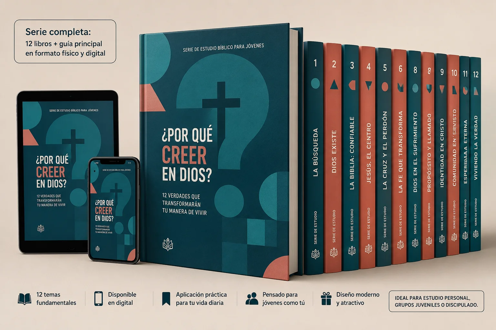
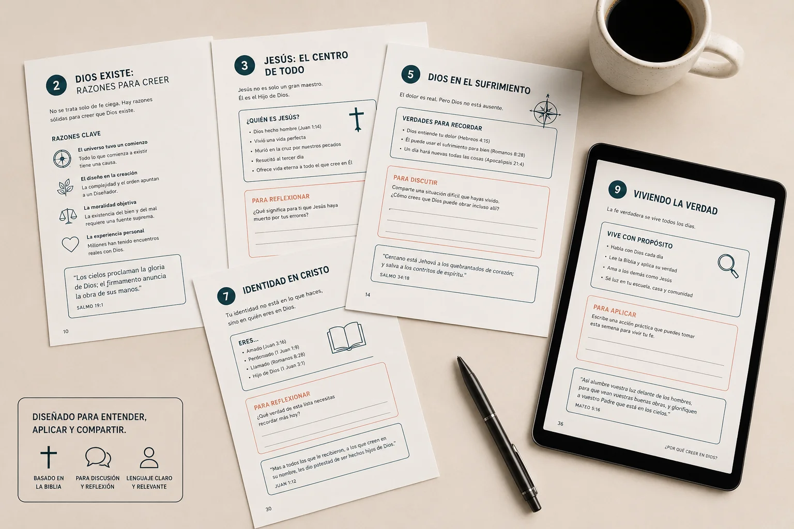
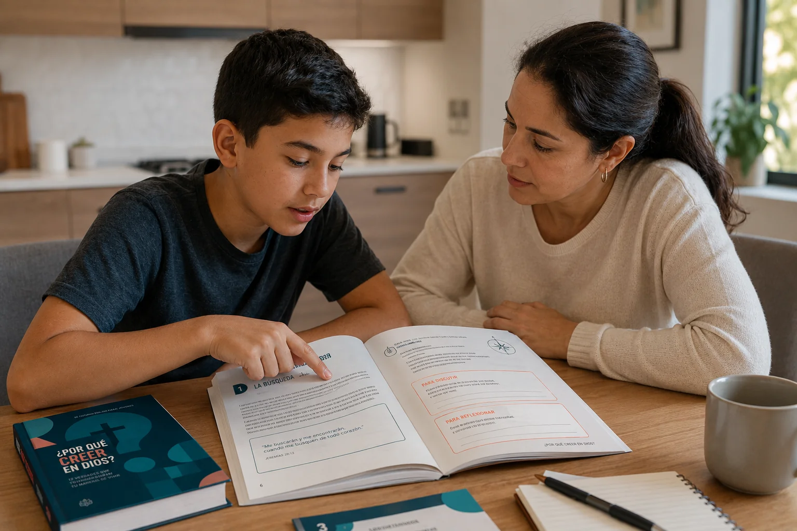
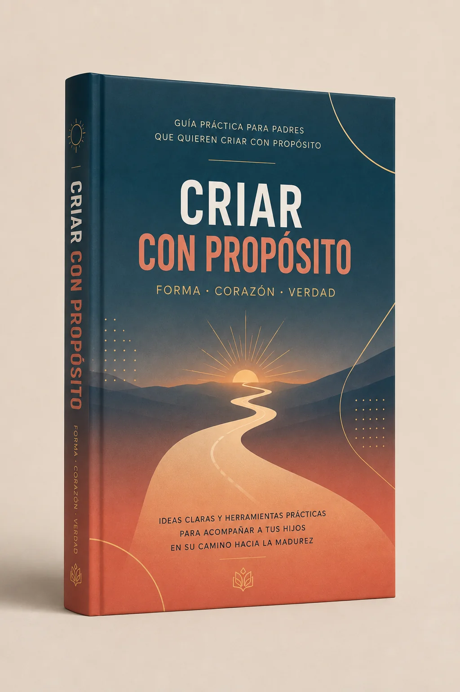
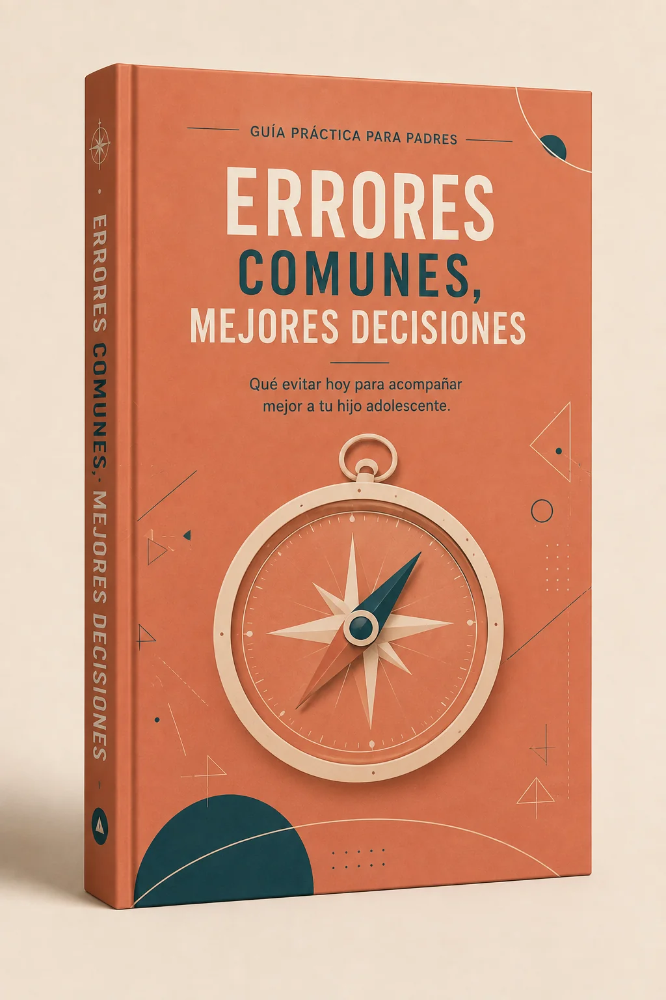
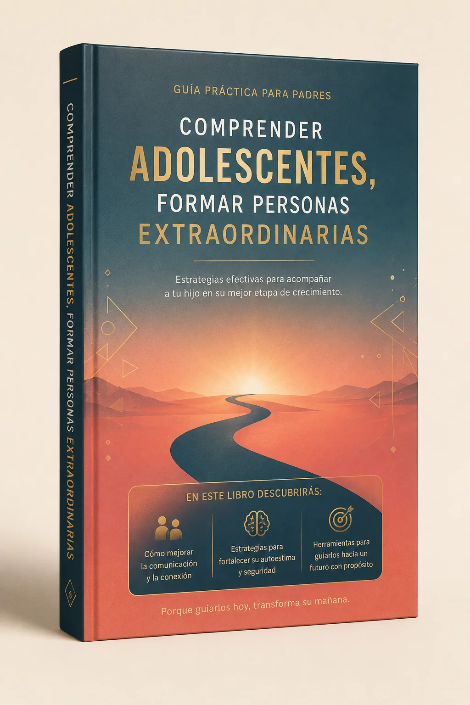
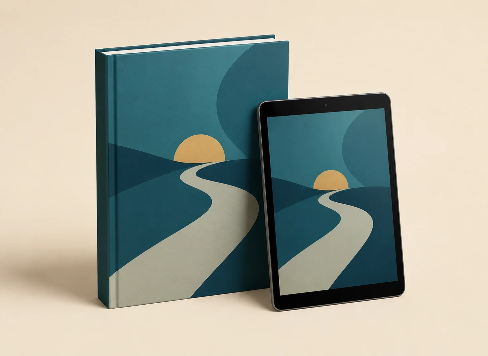
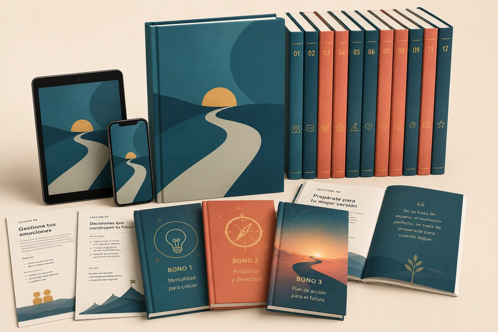

La serie digital creada por apologistas, teólogos y psicólogos infantiles para enseñar a niños de 8 a 14 años a PENSAR la fe — no solo repetir historias bíblicas.

QUIERO GARANTIZAR MI ACCESO CON DESCUENTO →Recibes todo al instante, directo a tu correo
Cada lección hace que tu hijo descubra la verdad por sí mismo, creando conexiones profundas y duraderas.
Un recorrido completo de 52 semanas.
Celular, tablet o computadora.
Imprímelo si tu familia lo prefiere.
Pensado para usarse semana a semana.

"Aquí, tu hijo no solo aprende qué creer, sino por qué creerlo."
QUIERO GARANTIZAR MI ACCESO →Este material es ideal si quieres:
Simple, práctico y directo al punto.
Tu hijo aprende a su propio ritmo, con lecciones cortas y claras.
Las preguntas del material generan diálogos profundos en casa.
Aprende a evaluar ideas, dudas y cuestionamientos.
La fe deja de ser abstracta y empieza a tener sentido.

52 semanas de teología sistemática para niños.

Cómo lidiar con preguntas difíciles sobre la fe sin pánico, sin respuestas prestadas y sin pelear — convierte las dudas en conversaciones que construyen confianza.

Actitudes comunes que muchos padres tienen sin darse cuenta — y cómo ajustarlas, unas conectando fe y conducta en el mismo lugar.

Cómo acompañar a tus hijos en los cambios cognitivos y emocionales de la adolescencia final, sin control excesivo, miedo ni presión.
La serie completa, sin bonos.

Todo lo del Básico + los 3 bonos · 2x más contenido.

Pago seguro · Acceso inmediato · 90 días de garantía
90 días para probar la metodología con calma. Si sientes que no era para tu familia, te devolvemos el 100% de tu dinero, sin preguntas.
Protegido por la garantía de 90 días
"Aprendí a conversar con mi hijo en lugar de darle respuestas automáticas. Las preguntas del material abrieron charlas que nunca habíamos tenido."
"Me di cuenta de que le enseñaba a repetir frases, no a entenderlas. La serie me ayudó a corregir eso semana a semana."
"Entendí que las dudas son parte del crecimiento de mi hija, no una señal de alarma. Eso me quitó mucha presión."
No es un curso académico. Es una guía práctica de 52 semanas, escrita en lenguaje simple, pensada para que la apliques en casa sin preparación previa.
No es obligatorio, pero está pensado para usarse semana a semana, en el orden en que está organizado, porque cada tema se apoya en el anterior.
No. Es un complemento para el hogar — el lugar donde más tiempo pasa tu hijo y donde más se forma su fe día a día.
Sí, recibes todo en PDF descargable. También puedes imprimirlo si tu familia lo prefiere.
El acceso es de por vida, incluyendo actualizaciones futuras del material sin costo adicional.
Sí. Funciona en celular, tablet o computadora, sin instalar nada.
Tienes 90 días para pedir el reembolso completo, sin preguntas.
Acceso inmediato · 90 días de garantía